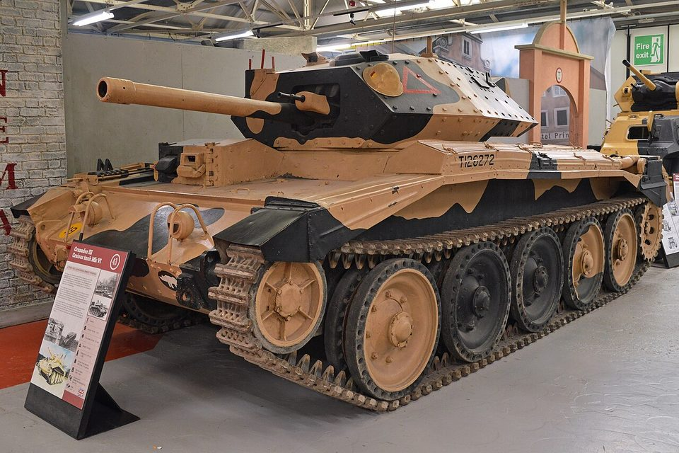

La guerra del desierto, 1940–1943: carros en el norte de África
Los carros de la campaña del norte de África: del dominio del Matilda II frente a los italianos a la llegada del Grant y el Sherman, hasta El Alamein y Túnez.

Contra los italianos
Entre 1940 y 1941 los británicos se enfrentaron en Libia y Egipto al ejército italiano, cuyos carros, como el Carro Armato M13/40 y el Carro Armato M11/39, tenían poco blindaje. El Matilda II, casi invulnerable a sus cañones, dominó el campo de batalla durante aquel invierno.
En febrero de 1941, en Beda Fomm, los británicos capturaron intactos tantos M13/40 que equiparon con ellos a varias de sus propias unidades.
Llegan los alemanes
La llegada de las fuerzas alemanas en 1941 cambió la situación. Los cañones alemanes de 50 y 88 mm acabaron con la ventaja del Matilda, y el Crusader, rápido pero mal armado y con una mecánica que sufría con la arena, perdió muchos carros por averías.
En mayo de 1942, en Gazala, los británicos estrenaron el estadounidense M3 Lee, que les dio por primera vez un cañón de 75 mm capaz de disparar proyectiles explosivos contra los cañones contracarro alemanes.
El Alamein
En octubre de 1942, en El Alamein, el M4 Sherman entró en combate por primera vez, con el ejército británico. El Crusader seguía siendo uno de los carros británicos más numerosos.
En el bando del Eje, el cañón de asalto italiano Semovente da 75/18 fue el blindado más eficaz de las divisiones Ariete y Littorio, mientras los M13/40 quedaban cada vez más superados por los Grant y los Sherman. La campaña terminó en Túnez en 1943.
Artículo elaborado a partir de las fichas de esta enciclopedia, donde se citan las fuentes de cada dato.